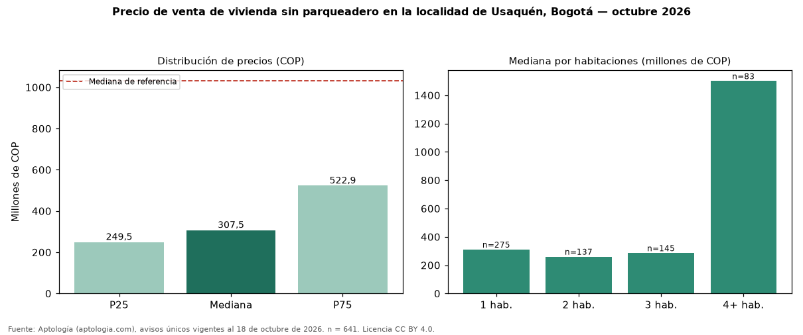

Precio de venta de vivienda sin parqueadero en la localidad de Usaquén, Bogotá — octubre 2026
COP 308 millones es la mediana de venta de vivienda sin parqueadero en la localidad de Usaquén, Bogotá, según 641 avisos únicos. Eso es 70 % menos que la mediana de toda la oferta de venta en la localidad de Usaquén, Bogotá (COP 1,03 mil millones). Frente a los avisos con parqueadero del mismo grupo (COP 1,10 mil millones, n = 13818), la diferencia es de −72 %; por metro cuadrado, −3 %. Por metro cuadrado, la mediana es COP 7.174.831/m² (−3 % frente a COP 7.391.304/m²), puesto 5 de 19 localidades comparables. Cruzando con la oferta de arriendo equivalente, la rentabilidad bruta implícita es 8,4 % anual. Por habitaciones: 1 habitación, COP 310 millones (n = 275); 2 habitaciones, COP 260 millones (n = 137); 3 habitaciones, COP 285 millones (n = 145); 4 o más habitaciones, COP 1,50 mil millones (n = 83). El rango intercuartílico va de COP 250 millones a COP 523 millones (razón 2,1). Datos abiertos CC BY 4.0 de Aptología; fuente y búsqueda de inmuebles: https://www.aptologia.com/venta/bogota/usaquen. Archivos: PDF de 2 páginas, CSV con las cifras y gráfica PNG.

| Avisos únicos | 641 |
|---|---|
| Percentil 25 | COP 249.500.000 |
| Mediana | COP 307.500.000 |
| Percentil 75 | COP 522.884.000 |
| Mediana por m² | COP 7.174.831 |
Fuente: avisos vigentes de portales inmobiliarios recopilados por Aptología, deduplicados (mínimo 30 avisos únicos por celda). Precios pedidos, no cerrados. Fecha: 2026-10-18.